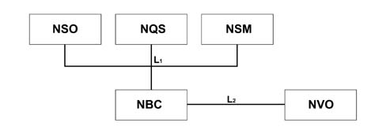
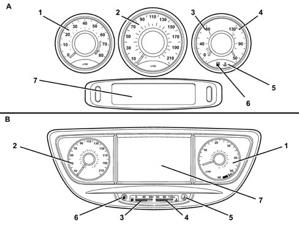
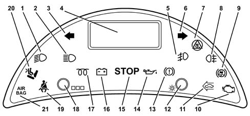
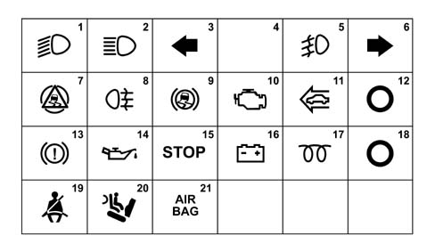
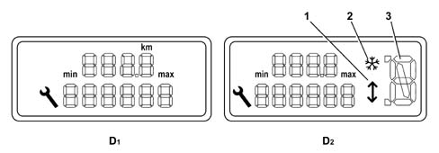
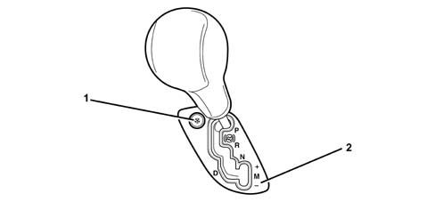
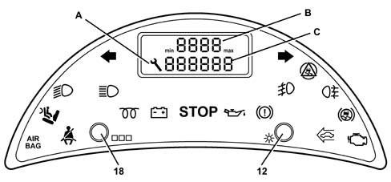
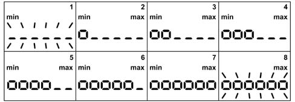
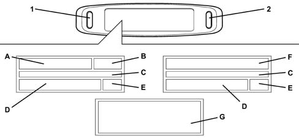

INSTRUMENT PANEL NODE (NQS), WARNING LIGHTS, MILOMETER NODE (NSO)
- Path
- Descriptions > 55 ELECTRICAL EQUIPMENT > 5505 INSTRUMENT/GAUGE ELECTRICAL CIRCUITS > 5505A MULTI-FUNCTION COMPONENTS > INSTRUMENT PANEL NODE (NQS), WARNING LIGHTS, MILOMETER NODE (NSO)
- Kind
- system description
- Applies to
- all engines; all production periods
- Interactive page
- https://sloeber94.github.io/elrnDB-fUlss/en/#/179000386
Applies to: all engines; all production periods
INTRODUCTION
The information for the driver is displayed by means of three elements:
- Instrument Panel Node (NQS) in the centre of the dashboard,
- Milometer Warning Lights Node (NSO) located above the steering column,
- Multifunction Screen Node (NSC) fitted in front of the instrument panel except on versions with level 3 Infotelematic Node.
The Instrument Panel Node comes in two versions:
- three quadrants for the basic version without an Infotelematic Node or with level 1 or 2 Infotelematic Node,
- two quadrants + DT colour screen + LCD for the version with level 3 Infotelematic Node.
THE ELECTRICAL STRUCTURE
The interconnections between the three modules and the NBC are illustrated in the diagram below.

- L1 - VAN Confort network
- L2 - VAN CAR1 network
THE INSTRUMENT PANEL NODE
General remarks
The NQS is supplied by a power VAN +.
The NQS is connected to the VAN Confort, managed by the NSO, receiving the commands displayed by the NBC and transmitting its status to the latter via the VAN Confort network.
The instrument panel controls the NSO.
The two versions of the instrument panel are illustrated in the diagram below: A bottom of the range panel, B top of the range panel

- 1 - Rev counter
- 2 - Speedometer
- 3 - Fuel level gauge
- 4 - Engine coolant temperature gauge
- 5 - Engine coolant overheating warning light
- 6 - Fuel reserve warning light
- 7 - Multifunction screen
Operating procedure
There are 4 possible operating modes for the NQS:
- stand-by mode. the instrument panel is inactive (consumption £ 1mA), awaiting activation of the +VAN or the pressing of the button which activates the network,
- reduced consumption mode: the instrument panel is passive (maximum consumption 50mA), VAN dialogue activated. The instrument panel oversees the network,
- normal consumption mode: the instrument panel is active,
- energy saving mode: the battery recharging warning light remains on, acquisition of button operation, operation output control, the remaining part of the instrument panel is not working.
Operation of instrument panel according to vehicle modes
The operation of the NQS depends on the operating conditions.
Functions | OPERATING CONDITIONS | |||||
|---|---|---|---|---|---|---|
NQS active | + ACC | Ignition key at "MAR" | Ignition key at "AVV" | Engine running | Vehicle moving | |
Button inputs | Yes | Yes | Yes | Yes | Yes | Yes |
LED control outputs or info | Yes | Yes | Yes | Yes | Yes | Yes |
Speedometer | No | No | Yes | Yes | Yes | Yes |
Rev counter | No | No | Yes | Yes | Yes | Yes |
Fuel level gauge | No | No | Yes | Yes | Yes | Yes |
Coolant temperature gauge | No | No | Yes | Yes | Yes | Yes |
Vehicle mileage condition (milometer) | Yes | Yes | Yes | Yes | Yes | Yes |
Instrument panel light dimmer | Yes | Yes | Yes | Yes | Yes | Yes |
Self-diagnosis | Yes | Yes | Yes | Yes | Yes | Yes |
Instrument panel inputs and outputs
The NQS is connected to the vehicle loom by means of a 26-way yellow connector with a fitting accessory.
The table below contains the pin out:
Pin | Function |
|---|---|
1 | NC |
2 | AC/ON button (climate control) |
3 | Reserve button |
4 | CDS/ESP button |
5 | Heated rear windscreen button |
6 | NC |
7 | Earth |
8 | Reserve LED |
9 | Heated rear windscreen LED |
10 | Diesel INFO |
11 | LED Warning |
12 | NC |
13 | + VAN |
14 | Warning button |
15 | NC |
16 | VAN Data/ |
17 | VAN Data/ |
18 | VAN Data/ |
19 | NC |
20 | Additional earth |
21 | NC |
22 | VAN Data |
23 | VAN Data |
24 | VAN Data |
25 | NC |
26 | NC |
Input operation: the input acquires the state of the button. The instrument panel node sends multiplex information which indicates the state of the input.
Operation of the outputs: the information acquired by the NQS does not directly control the corresponding output (e.g.: the acquisition of the pressing of the warning button does not cause the warning LED to come on directly).
Description of the instrument panel warning lights
The warning lights come on according to the conditions shown in the table.
Warning light | Operating conditions | |||||
|---|---|---|---|---|---|---|
NQS active | + ACC | Key in "mar" (ON) | Key in "avv" (starting) | Engine running | Vehicle moving | |
Minimum fuel level | No | No | Yes | No | Yes | Yes |
Coolant temperature alarm | No | No | Forced | No | Yes | Yes |
Water level | No | No | No | Yes | Yes | |
Speedometer
The pointer moves to the 0 km/h position the moment the instrument panel is activated. The information relating to speed received by the NQS is converted.
In the case of a fault: if there is a network error or an invalid figure is received, the pointer returns to the rest position 5 seconds after the fault appears. The last figure received remains displayed during this time.
Rev counter
The pointer moves to the 0 rpm position the moment the instrument panel is activated. The information relating to engine speed received by the NQS is converted.
In the case of a fault: if there is an error or an invalid figure is received, the pointer returns to the rest position 5 seconds after the fault appears. The last figure received remains displayed during this time.
Fuel level gauge
ANALOGUE DISPLAY
The information relating to the fuel level received by the NQS is converted.
Index increase time: the moment the function is activated, the pointer moves from the stationary position to reach its position (whatever that may be) within a maximum of 2 seconds without deviation.
Control values: the fuel level control values are 0 and 100%. The pointer axis should be at +/- 1.5° from the serigraphed graduated scale axis for these values.
In the case of a fault: if there is an error or an invalid figure is received, the pointer returns to the rest position 5 seconds after the fault appears. The last figure received remains displayed during this time.
DIGITAL DISPLAY
The information relating ot the fuel level received by the NQS is converted into a number of segments to be displayed in accordance with the table below.
LEVEL (%) | 0 - 3 or invalid figure | 4 ÷ 8 | 9 ÷ 13 | 14 ÷ 18 | 19 ÷ 23 | 24 ÷ 28 |
|---|---|---|---|---|---|---|
DISPLAY (no. of segments) | 1 | 2 | 3 | 4 | 5 | 6 |
LEVEL (%) | 29 ÷ 34 | 35 ÷ 40 | 41 ÷ 46 | 47 ÷ 53 | 54 ÷ 59 | 60 ÷ 65 |
DISPLAY (no. of segments) | 7 | 8 | 9 | 10 | 11 | 12 |
LEVEL (%) | 66 ÷ 71 | 72 ÷ 76 | 77 ÷ 81 | 82 ÷ 86 | 87 ÷ 91 | 92 ÷ 96 |
DISPLAY (no. of segments) | 13 | 14 | 15 | 16 | 17 | 18 |
LEVEL (%) | 97 ÷ 100 | |||||
DISPLAY (no. of segments) | 19 |
In the case of a fault: if an invalide figure is received, the display becomes identical to the minimum level 5 seconds after the fault has appeared. The last figure received remains displayed during this time.
Coolant temperature gauge
ANALOGUE DISPLAY
The information relating to the engine coolant temperature received by the NQS is converted.
Index increase time: the moment the function is activated, the pointer moves from the stationary position to reach its position within a maximum of 2 seconds without deviation.
Control value: the control value for the water temperature is 118°C. For this figure the pointer axis should be +/- 2° from the serigraphed graduated scale axis.
Coolant temperature alarm: if a coolant temperature alarm is received, the pointer moves to the maximum area and remains in this position for the entire duration of the alarm.
In the case of a fault: if there is an error or an invalid figure is received, the pointer returns to the rest position 5 seconds after the fault appears. The last figure received remains displayed during this time.
DIGITAL DISPLAY
The information relating ot the engine coolant temperature received by the NQS is converted into a number of segments to be displayed in accordance with the table below.
TEMPERATURE (°C) | 50 - 54 or invalid figure | 55 ÷ 59 | 60 ÷ 64 | 65 ÷ 68 | 69 ÷ 72 | 73 ÷ 76 |
DISPLAY (no. of segments) | 1 | 2 | 3 | 4 | 5 | 6 |
TEMPERATURE (°C) | 77 ÷ 80 | 81 ÷ 84 | 85 ÷ 88 | 89 ÷ 91 | 91 ÷ 93 | 94 ÷ 96 |
DISPLAY (no. of segments) | 7 | 8 | 9 | 10 | 11 | 12 |
TEMPERATURE (°C) | 97 ÷ 98 | 99 ÷ 100 | 101 ÷ 102 | 103 ÷ 104 | 105 ÷ 107 | 108 ÷ 109 |
DISPLAY (no. of segments) | 13 | 14 | 15 | 16 | 17 | 18 |
TEMPERATURE (°C) | 110 ÷ | |||||
DISPLAY (no. of segments) | 18 |
Coolant temperature alarm: if a coolant temperature alarm is received, the display is the same as for the overheating condition and remains in this position for the entire duration of the alarm.
In the case of a fault: if there is an error or an invalid figure is received, the pointer returns to the rest position 5 seconds after the fault appears. The last figure received remains displayed during this time.
Vehicle mileage management
The instrument panel saves the data relating to the mileage travelled:
- at least once every 5 kilometres,
- when "stand-by within 5 seconds" information is received, or when the ignition is turned off,
- or if the trip meter zeroing button is pressed (transmitted from the NSO).
The following strategies are implemented to guarantee the milometer figures if the NBC or the NQS is replaced:
- if the value memorized in the NQS is below or equal to the value memorized in the NBC, the NQS adapts to the basic value memorized in the NBC,
- if the value memorized in the NQS is higher than the value memorized in the NBC, the NQS maintains the value memorized.
The milometer can be completely zeroed (reset) if the mileage is below 250 km (or 250 miles). This zeroing can only be done once.
In the case of a fault: if there is a network error or an invalid figure is received, the instrument panel does not make the comparison.
NQS lighting
LIGHTING DIMMER CONTROL
The lighting for the panels and the displays is the dimmer type.
The lighting level for the instrument panel is defined by a table with 16 values memorized in an EEPROM regulated in such a way that the lighting is in line between the two extreme brightness values.
If there is a fault: if there is a network error, the instrument panel lighting takes place at the standard value.
Self-diagnosis
The instrument panel carries out an autodiagnosis on its operation and the components connected to it for which it guarantees operation.
All the problems which occur during operation are memorized and made available to be read and deleted using the diagnostic equipment.
Description of the Milometer Warning lights Node (NSO)
The node is connected to the VAN Confort network and is managed by the NBC. The node is ruled by the instrument panel from which it receives display commands and to which it signals its status via the VAN Confort network.
The diagram below illustrates the instrument panel node and warning lights.

There are two types of nodes comprising the elements illustrated in the table below depending on the vehicle trim level and whether or not automatic transmission is fitted.
Manual gearbox | Automatic transmission | |
|---|---|---|
Built-in counters: | ||
- dimmer adjustment | 1 | 1 |
- Milometer zeroing / Milometer maintenance | 1 | 1 |
Warning lights (definite + reserve) | 18 + 3 | 18 + 3 |
Milometer and trip meter display | X | |
Display for milometer, trip meter and automatic transmission | X | |
Service indicator which uses the milometer display | X | X |
Oil level indicator which uses the milometer display | X | X |
Lighting with dimmer | X | X |
The Milometer Warning Lights Node has 18 warning lights illustrated in the diagram

The operation of the warning lights is described below
Milometer node warning lights | Fault indication | Operating procedure | |
|---|---|---|---|
1 | Dipped headlamps | - | Fixed |
2 | Main beam headlamps | - | Fixed |
3 | Left direction indicator | - | Flashing |
4 | LCD screen | - | - |
5 | Rear fog lamp | - | Fixed |
6 | Right direction indicator | - | Flashing |
7 | ESP | ESP adjustment | Flashing 2 secs min. |
ESP fault | Fixed | ||
ESP inhibited | Fixed | ||
8 | Front fog light | - | Fixed |
9 | ABS | ABS fault | Fixed |
10 | EOBD | EOBD fault | |
Catalyzer serious pollution risk fault | Flashing | ||
11 | Cruise Control | Cruise control activated | Fixed |
12 | Light dimmer button | - | - |
13 | Brakes | Brake fluid level | Fixed |
REF fault | Fixed | ||
Handbrake | Fixed | ||
14 | Oil alarms | Oil pressure alarm | Fixed |
15 | Stop | Brake fluid level | Fixed |
REF fault | Fixed | ||
Handbrake | Fixed | ||
Coolant temperature alarm | Fixed | ||
Water level alarm (except petrol engines) | Fixed | ||
Oil pressure alarm | Fixed | ||
Oil temperature alarm | Fixed | ||
Puncture | Fixed | ||
16 | Battery charge | Battery charging failure | Fixed |
17 | Diesel pre-heating | Diesel pre-heating | Fixed |
18 | Trip meter reset button | - | - |
19 | Driver's seat belt | Driver's seat belt not fastened | Fixed |
20 | Passenger air bag disabling | Passenger air bag disabled | Fixed |
21 | Air bag failure | Air bag system failure | Fixed |
CONTROL PANEL CONNECTOR
The NQS is connected to the VAN confort network and only has one positive power supply (+VAN)
The connector consists of a tab holder fitting accessory with a black guide pin.
The table below illustrates the connector terminals.
Pin | Function |
|---|---|
1 | Earth |
2 | VAN Data/ |
3 | VAN Data/ |
4 | + VAN |
5 | VAN Data |
6 | VAN Data |
NQS OPERATING MODES
The instrument panel node operating modes vary according to the state the system finds itself in:
Stand-by consumption state.
The Node is not activated (consumption < 1mA). The node is not working and is awaiting the activation of the +VAN signal.
Reduced consumption state.
The Instrument Panel is passive. Maximum consumption: 50 mA. The VAN dialogue is active.
Normal consumption state.
The node is active and working.
Energy saving mode state active.
The battery charging warning light is on. The rest of the NSO is not working.
The operation of the node (VAN information to be considered) depends on the situation of the vehicle as illustrated in the table below.
Components | Operating conditions | |||||
|---|---|---|---|---|---|---|
NSO active | + ACC | Ignition key at "MAR" (1) | Ignition key at "AVV" | Engine running | Vehicle moving | |
General milometer | Yes | Yes | Yes | Yes | Yes | Yes |
Trip meter | Yes | Yes | Yes | Yes | Yes | Yes |
Service indicator | No | No | Yes | Yes | Yes | Yes |
Oil level indicator in milometer display | No | No | Yes | Yes | Yes | Yes |
Lighting | Yes | Yes | Yes | Yes | Yes | Yes |
Acquisition of dimmer input value | Yes | Yes | Yes | Yes | Yes | Yes |
Self-diagnosis | Yes | Yes | Yes | Yes | Yes | Yes |
General warning lights
The dedicated warning lights are operated the moment the frame is received.
Flashing situation:
- The flashing of one warning light is predominant compared with the light on constantly state. In addition, if several warning lights are flashing simultaneously with the same frequency, they are activated in synchronization.
Failure situation:
- if there is a network error or an invalid value is received, the warning lights assume the standard value specified in the VAN message 5 seconds after the fault appears. The last figure received remains displayed during this time.
Initialization bulb test
The warning lights listed in the next paragraph undergo a bulb test the moment the key ON signal is activated. There is a bulb test timer delay to synchronize the switching off of the warning lights (value: 4 secs.) starting from the activation of the key on signal. This timed delay is not zeroed when changing to another condition (move to key in starting position or other).
The warning lights come on as soon as at least one condition is activated or straight after the key on for forced activation warning lights.
The warning lights are switched off when the bulb test timer delay has expired and the on condition has relapsed. (One warning light remains on if its on condition remains activated when the timer has expired. This involves the presence of a fault that already occurred at the initialization).
The warning lights come on in accordance with precise conditions indicated in the table below:
Warning light | Activation conditions | ||||
|---|---|---|---|---|---|
NSO active | + ACC | Ignition key at "MAR" | Ignition key at "AVV" | Engine running | |
Dipped headlamps | YES | YES | YES | YES | YES |
Main beam headlamps | YES | YES | YES | YES | YES |
Front fog light | YES | YES | YES | YES | YES |
Rear fog lamp | YES | YES | YES | YES | YES |
Right direction indicator | Yes | Yes | Yes | Yes | Yes |
Left direction indicator | Yes | Yes | Yes | Yes | Yes |
Catalyzer, EOBD failure | No | No | Yes | No | Yes, fixed |
Serious pollution risk fault | No | No | No | No | Yes, flashing |
Passenger AIR BAG disabled | Yes | Forced | No | Yes | |
Battery charge | No | Yes | Yes | No | Yes |
ABS fault | No | No | Yes | No | Yes |
Brake fluid level alarm | No | No | Yes | No | Yes |
Electronic brake force distribution fault | No | No | Yes | No | Yes |
Handbrake | No | No | No | No | Yes |
Driver's seat belt not fastened | No | No | No | No | Yes |
Oil pressure alarm | No | No | Yes | No | Yes |
Oil temperature | No | No | Yes | No | Yes |
Diesel pre-heating | No | No | Yes | No | No |
AIR BAG failure | No | No | Forced | No | Yes |
Cruise Control vehicle speed adjustment | No | No | No | No | Yes |
ESP working | No | No | No | No | Flashing |
minimum duration 2 secs. | |||||
ESP fault | No | No | Yes | No | Yes |
ESP inhibition | No | No | No | No | Yes |
STOP | |||||
Brake fluid level alarm | No | No | Yes | No | Yes |
Electronic brake force distribution failure | No | No | Yes | No | Yes |
Handbrake | No | No | Yes | No | Yes, if the vehicle speed > 0 |
Oil pressure alarm | No | No | Yes | No | Yes |
Oil temperature alarm | No | No | Yes | No | Yes |
Coolant temperature alarm | No | No | Yes | No | Yes |
Water level alarm | No | No | Yes | No | Yes |
Puncture alarm | No | Yes | Yes | No | Yes |
Automatic Transmission Node (NCA) information display:
If the vehicle is equipped with automatic transmission, the information relating to the NCA is entered in the NSO.
The diagram below illustrates the two milometer displays for the version with automatic transmission (D2 in the diagram) and the version without automatic transmission (D1 in the diagram).

The NSO milometer display is capable of showing the gear selected (for automatic transmission) P,R, N or D (symbol 3 in the diagram); when changing gear, the symbol flashes until the new gear is engaged.
For the sequential driving mode, the engagement of the speed (carried out manually) is shown on the display by means of the upper or lower arrow, respectively (see symbol 1 in the diagram).
If the road surface grip conditions are poor (snow or ice) it is possible to engage a driving mode where the vehicle sets off using the second speed. In this situation the display will show the "snow" symbol 2 in the diagram.
The diagram below highlights the button for engaging the snow mode.

- 1 - "snow mode" button
- 2 - Sequential mode gear change position
Warning light | Operating conditions | ||||||
|---|---|---|---|---|---|---|---|
NSO active | + ACC | Ignition key at "MAR" (1) | Ignition key at "AVV" | Engine running | Vehicle moving | No fault | |
Ratios | |||||||
P: Park position NCA | NO | YES | YES | YES | YES | YES | YES |
R: Reverse position NCA | NO | NO | YES | YES | YES | YES | YES |
N: Neutral position NCA | NO | NO | YES | YES | YES | YES | YES |
D: Automatic driving position NCA | NO | NO | YES | YES | YES | YES | YES |
4: 4th speed engaged | NO | NO | YES | YES | YES | YES | YES |
3: 3rd speed engaged | NO | NO | YES | YES | YES | YES | YES |
2: 2nd speed engaged | NO | NO | YES | YES | YES | YES | YES |
1: 1st speed engaged | NO | NO | YES | YES | YES | YES | YES |
(2): gear change in progress | NO | NO | YES | YES | YES | YES | YES |
No display | NO | NO | YES | YES | YES | YES | YES |
- : invalid figure | NO | NO | YES | YES | YES | YES | YES |
Programmes | |||||||
Sequential programme selection NCA | NO | NO | YES | YES | YES | YES | Flashing |
"Snow" programme selection NCA | NO | NO | YES | YES | YES | YES | Flashing |
No display | NO | NO | YES | YES | YES | YES | YES |
In the case of a fault: if a fault is detected by the NCA the "snow" symbol (2 in the diagram) flashes with the gear engaged displayed. The gear is enaged in this situation. If there is a network error or an invalid figure without an NCA fault, the gear engaged display is specific without the display of the operating mode.
General milometer operation
The milometer display is capable of showing the following:
- on the top line (B in the diagram), the trip mileage and the engine oil level gauge (where fitted)
- the bottom line (C in the diagram) shows the total mileage and the service indicator; also, on versions equipped with automatic transmission, there is the gear engaged information and the snow warning symbol.
In the case of a fault: if there is a network error or an invalid figure is received, the milometer shows 000000 5 seconds after the fault appears. This display is also applicable in service mode and in oil level mode.

- 12 - Light dimmer button
- 18 - Trip meter reset button
- A - Service key symbol
- B - Trip meter display
- C - Total mileage display and service indicator
TRIP METER
The trip meter is designed to display the mileage since the last zeroing (reset).
It is zeroed, with the ignition on, during the milometer display, as soon as the zeroing button is pressed. Pressing the zeroing button whilst another function (service or oil level) is displayed does not reset the trip meter.
In the case of a fault: if there is a network error or an invalid figure is received, the trip meter shows 000.0 5 seconds after the fault appears. The last figure received remains displayed during this time.
SERVICE INDICATOR
When the key is turned to the ON position, the spanner symbol lights up for 5 seconds and the milometer shows the mileage (rounded off) until the next service is due; after this period has elapsed, the indicator will automatically show the total mileage in accordance with two conditions:
- Starting from 1000 km until the service interval, when the ignition is turned ON, the spanner symbol (A in the diagram) will light up for 5 seconds and the milometer indicator below will show the number of kilometres (rounded off) until the next service is due; when this period has elapsed, the warning light will remain on and the indicator will automatically display the total mileage;
- When the service interval has been exceeded, when the ignition is turned ON, the spanner symbol (A in the diagram) will flash for 5 seconds together with the mileage reading preceded by a minus sign (-); when this period has elapsed, the warning light will remain on and the indicator will automatically display the mileage.
PLANNED MAINTENANCE RECONFIGURATION
If the vehicle is used in particularly harsh conditions it is advisable to reconfigure the system allowing the service intervals of 20,000 km to be reduced to 15,000 or 10,000 km.
Follow the procedure described below in order to carry out this reconfiguration:
- turn the ignition key to the ON position;
- press the left button (18 in the diagram) and keep it pressed, the mileage (remaining or exceeded) for the next service will flash on the service indicator;
- release the button, the service indicator will show the frequency set for the system;
- pressing the left button (18 in the diagram) repeatedly allows the selection of 20,000 km (recommended for normal usage of the vehicle); 15,000 km (recommended for heavy use) or 10,000 km (advisable for particular heavy use).
- when the desired frequency is shown by the service indicator, press the left button (18 in the diagram) and keep it pressed, it will flash for about 10 seconds and then remain on constantly;
- release the button to memorize the setting.
PROCEDURE FOR ZEROING SERVICE MILEAGE
In order to zero the service mileage, proceed as follows:
- turn the ignition key to the ON position;
- press the left button (18 in the diagram) and keep it pressed, the mileage (remaining or exceeded) for the next service will flash on the service indicator;
- press the left button (18 in the diagram) and keep it pressed for about 10 seconds, the service indicator should be zeroed displaying the message "= 0" and the spanner symbol should go out to confirm that the reset has taken place.
OIL LEVEL GAUGE IN THE MILOMETER DISPLAY
The oil level is displayed for 10 seconds, in place of the milometer data, starting from the end of the service mode.
Pressing the milometer zeroing button whilst the oil level is displayed interrupts the next display (milometer) sequence.
OIL LEVEL DISPLAY SYSTEM
The 3 elements displayed are the "oil level", "min" and "max" and the 4 segments below he 6 digits of the general milometer display. The number of digits lit up corresponds to the oil level in the min-max range. When the ignition key is turned to the ON position, the instrument provides a reading of the oil level in the oil sump.
The diagram below illustrates the oil level conditions

- 1 - Oil level percentage 0 - 10 or an invalid figure
- 2 - Oil level percentage 12 - 25
- 3 - Oil level percentage 26 - 39
- 4 - Oil level percentage 40 - 53
- 5 - Oil level percentage 54 - 67
- 6 - Oil level percentage 68 - 81
- 7 - Oil level percentage 82 - 100
- 8 - Oil level percentage > 100
If an "invalid value" signal is received, the 6 lower segments flash, whilst if a "measurement not taken" or "measurement in progress" signal is received, the oil level display sequence is not carried out and the instrument panel moves on to the next (milometer) display.
If a "measurement in progress" signal is received, the "oil level gauge" symbol appears on its own. The measurement will only be displayed after a valid figure is received. The display lasts 10 seconds in total after the ignition is turned ON.
NSO lighting management
The NSO lighting level is defined by a table with 16 values memorized in the EEPROM managed in such a way that the lighting is in line between the two extreme brightness values.
In nightime mode, the milometer display lighting is controlled by the dimmer whilst in the daytime mode the milometer lighting is at the maximum dimmer setting.
In the case of a fault: if there is a network error, the node lighting is at the standard values.
DIMMER BUTTON ACTIVATION LOGIC
The system is equipped with an intake that allows the variation of the brightness level. This level is taken from a table with 16 values.
Each time the dimmer button is pressed the brightness is either increased or decreased depending on the direction. This direction depends on the type of adjustment (pressed briefly or for longer). The moment the function is activated, the direction is positive. In particular:
- Pressing for a brief time T £ 500 ms alters the intensity of the brightness by a step as illustrated in the table below. In the case of successive brief pressing, the direction changes as soon as the brightness level reaches one of the two extreme values (as soon as the maximum brightness level is reached, the direciton of the alteration becomes negative and viceversa).
- Pressing the button for a longer time T > 500 ms alters the brightness level by one step every 250 ms.
In this case, the direction of the alteration reverses each time the button is released. When an extreme value is reached, the brightness level remains constant if the button is kept pressed. The direction of the alteration is reversed the next time it is pressed.
The table below illustrates the conversion modes.
Step | 0 | 1 | 2 | 3 | 4 | 5 | 6 | 7 |
Brightness intensity value | 0 | 6% | 12% | 17.5% | 24% | 30% | 37% | 43.5% |
Step | 8 | 9 | A | B | C | D | E | F |
Brightness intensity value | 50% | 57% | 64% | 71% | 78% | 85.5% | 93% | 99.5% |
Autodiagnostic system
The NSO carries out an autodiagnosis on its operation and the components connected to it for which it guarantees operation. All the problems which occur during operation are memorized and made available to be read and deleted using the diagnostic equipment.
The NBC operates the collection of displays for the warning lights in the instrument panel (NQB) and in the NSO.
Management of the warning lights
The flashing of a warning light is carried out inside the NQB and the NSO with the exception of the warning lights for the direction indicators.
Message management
The NBC operates the collection of displays for the multifunction screen node (NSC).
MULTIFUNCTION SCREEN NODE (NSC)
the Multifunction Screen Node is incorporated in the multiplexing network and is fitted in front of the instrument panel
It is made up of four main components:
- a display/lighting unit with black writing on a green background,
- an information processing unit,
- a network management unit,
- a clock.
The Node offers the services of a VAN Confort network calculator and its task is to collect the information being transferred on the multiplexing network, co-ordinate the various intervention priorities for the peripheral devices (the radio in particular) and regulate the brightness of the display.
The NSC manages the display of the:
- Time
- Date
- Outside temperature
- Radio
- CD changer
- On board computer (consumption/average speed/range)
- Condition of opening parts
- Vehicle warnings
The matrix type screen is 120 x 32 pixel. The description that follows includes the three different types of display available for the NSC.

- 1 - Left button
- 2 - Right button
- A - Radio information display
- B - Time display
- C - Radio statio identification
- D - Date, on board computer
- E - Outside temperature
- F - Volume graphics or audio graphics
- G - Memory card, warnings, radio station selection, adjustment, telephone, etc.
Parameter adjustment
The parameters shown on the display are adjusted by means of two switches at the side of the NSC.
In the normal display mode (i.e. without any warnings, etc. displayed), the date is shown when the left button is pressed gently. Pressing the button for longer, at any time, switches the NSC to the adjustment mode. Each time the left button is just pressed simply, the parameter to be set is changed until the exit from the adjustment mode.
The right button allows the parameter to be set to be increased and it flashes each time the button is pressed. The task of the NSC is to ask the NBC to completely scan the warnings in progress and display them when they are verified and validated.
The table below defines the various warnings shown on the NSC display.
Information | Corresponding text on the display | Automatic display = A - User action feed-back = F - Fault display = H |
|---|---|---|
Economy mode | Economy mode activated: | F |
Tyre inflation pressure insufficient warning | Z1: WHEEL (E) Z2: DEFLATED (E) | A |
Opening part open with engine running warning | If this value is 1, the NSC should read which opening part is involved | F |
NCA oil temperature | Z1: TEMP. GEARBOX OIL - Z2: EXCESSIVE | A |
Hydraulic/brake fluid level | Z1: LEV. FLUID - Z2: BRAKE INSUFFICIENT | A |
Hydraulic pressure | Z1: SUSPENSION PRESSURE - Z2: HYDRAULIC | A |
Serious suspension fault | Z1: SERIOUS FAULT - Z2: SUSPENSION | A |
engine oil temperature sensor | Z1: TEMP. ENGINE OIL - Z2: EXCESSIVE | A |
Coolant temperature | Z1: TEMP. ENGINE COOLANT - Z2: EXCESSIVE | A |
Particle filter | Z1: BLOCKAGE RISK - Z2: PARTICLE FILTER | |
Tank flap open warning | Z1: FUEL TANK FLAP - Z2: OPEN WARNING | A |
Height from the ground warning | If this value is 1, the NSC should read what the required height is. | |
Minimum diesel additive level | Z1: MIN. LEVEL - Z2: DIESEL ADDITIVE | |
Puncture warning | Z1: WHEEL (E) - Z2: PUNCTURED (E) | A |
Water level | Z1: TOP UP LEVEL - Z2: ENGINE COOLANT | A |
Oil pressure | Z1: OIL PRESSURE - Z2: INSUFFICIENT ENGINE | A |
Oil level | Z1: TOP UP LEVEL - Z2: ENGINE OIL | A |
EOBD fault | Z1: FAULT - Z2: POLLUTION CONTROL | A |
Pad wear fault | Z1: PADS - Z2: WORN BRAKES | A |
NCA fault | Z1: FAULT - Z2: AUTOMATIC TRANSMISSION | A |
ASR/CDS fault | Z1: ESP / ASR - Z2: OUT OF SERVICE | A |
ABS fault | Z1: FAULT - Z2: ABS | A |
Suspension fault | Z1: SUSPENSION FAULT - Z2: OR DIRECTION | A |
NFR fault | Z1: FAULT - Z2: BRAKING | A |
Air Bag or window bag fault | Z1: FAULT - Z2: AIRBAG | A |
Front Air Bag fault | Z1: FAULT - Z2: AIRBAG | A |
Water temperature preliminary warning | Z1: TEMP. ENGINE COOLANT - Z2: HIGH | A |
Water in the diesel filter | Z1: PRESENCE OF WATER - Z2: IN THE DIESEL FILTER | A |
Headlamp alignment fault | Z1: ALIGNMENT FAULT - Z2: HEADLAMPS | A |
One bulb blown | If this value is 1, the NSC should read which bulb has blown | A |
Emergency battery | Z1: SUPPLEMENTARY BATTERY - Z2: RUN DOWN | A |
Battery charging failure | Z1: FAULT - Z2: BATTERY CHARGING | A |
Diesel additive calculator fault | Z1: FAULT - Z2: DIESEL ADDITIVE | A |
Catalyzer serious pollution risk fault | Z1: FAULT - Z2: CATAYLZER | A |
Parking brake on | Z1: BRAKE - Z2: ON | A |
Driver's seat belt not fastened | Z1: SEAT BELT - Z2: NOT FASTENED | A |
Passenger Air Bag disabled | Z1: PASSENGER AIR BAG - Z2: DISABLED | A |
Screen washer empty | Z1: ADD FLUID - Z2: SCREEN WASHER | A |
Excessive speed signal | Z1: SPEED - Z2: EXCESSIVE | A |
Key inserted signal | Z1: KEY - Z2: INSERTED | F |
Lights on signal * | Z1: SIDE LIGHTS - Z2: ON | F |
Hill-Holder signal | Z1: HILL HOLDER - Z2: ACTIVE | F |
Impact sensor signal | Z1: FAULT - Z2: IMPACT SENSOR | A |
Wheel sender unit battery run down | Z1: BATTERY - Z2: WHEEL PRESSURE SENSOR RUN DOWN | A |
Remote control battery run down | Z1: BATTERY - Z2: REMOTE CONTROL RUN DOWN | A |
NCA safety signal | Z1: ENGAGE AUTOMATIC GEAR LEVER - Z2: IN POSITION P | F |
Brake lights check request | Z1: BRAKE LIGHTS CHECK: - Z2: BRALE GENTLY | A |
Fuel minimum | Z1: FUEL LEVEL - Z2: LOW | A |
Wheel number missing | Z1: X PRESSURE SENSOR - Z2: MISSING TYRE (x > 1) | A |
Vehicle locked condition | Z1: DOORS - Z2: CLOSED | F |
ASR inhibition | Z1: ASR - Z2: DEACTIVATED | A |
Child lock condition | Z1: CHILD LOCKJS - Z2: ACTIVATED | F |
Closing whilst driving | Z1: DOOR CLOSING - Z2: AUTOMATIC ACTIVATED | F |
Automatic lighting activated | Z1: LIGHTING - Z2: AUTOMATIC ACTIVATED | F |
Rain sensor activated | Z1: DRYING - Z2: AUTOMATIC ACTIVATED | F |
Engine immobilized or transponder not recognized | Z1: ANTI-THEFT FAULT - Z2: ELECTRONIC | F |
Suspension mode | Z1: SPORTS SUSPENSION - Z2: ACTIVATED | F |
LPG fuel rejected | Z1: LPG FAULT - Z2: REJECTED | A |
LPG fault | Z1: FAULT - Z2: LPG | A |
Right front lights fault | Z1: RIGHT FRONT BULB BLOWN - Z2: LIGHTS | H - Appears automatically as soon as the fault is identified, then remains until the "fault missing or not validated" situation |
Right rear lights fault | Z1: RIGHT REAR BULB BLOWN - Z2: LIGHTS | H |
Left front lights fault | Z1: LEFT FRONT BULB BLOWN - Z2: LIGHTS | H |
Left rear lights fault | Z1: LEFT REAR BULB BLOWN - Z2: LIGHTS | H |
Fault code D | Z1: RIGHT FRONT BULB BLOWN - Z2: CODE | H |
Fault code S | Z1: LEFT FRONT BULB BLOWN - Z2: CODE | H |
Main beam headlamp fault D | Z1: RIGHT FRONT BULB BLOWN - Z2: MAIN BEAM | H |
Main beam headlamp fault S | Z1: LEFT FRONT BULB BLOWN - Z2: MAIN BEAM | H |
Brake light failure D | Z1: RIGHT REAR BULB BLOWN - Z2: BRAKE LIGHT | H |
Brake light failure S | Z1: LEFT REAR BULB BLOWN - Z2: BRAKE LIGHT | H |
Left front fog light fault | Z1: LEFT FRONT BULB BLOWN - Z2: FOG LIGHT | H |
Right front fog light fault | Z1: RIGHT FRONT BULB BLOWN - Z2: FOG LIGHT | H |
Left rear fog lamp fault | Z1: LEFT REAR BULB BLOWN - Z2: REAR FOG LAMP | H |
Right rear fog lamp fault | Z1: RIGHT REAR BULB BLOWN - Z2: REAR FOG LAMP | H |
Right front direction indicator/right rear direction indicator/ right repeater fault | Z1: DIRECTION INDICATOR - 72: DEFECTIVE | H |
Left front direction indicator/left rear direction indicator/left repeater fault | Z1: LEFT DIRECTION INDICATOR - Z2: DEFECTIVE | H |
Break in recorded | Break in detected | A |
Right front door open | Symbol | F |
Left front door open | Symbol | F |
Right rear door open | Symbol | F |
Left rear door open | Symbol | F |
Boot open | Symbol | F |
Bonnet open | Symbol | F |
Fuel flap open | Symbol | F |